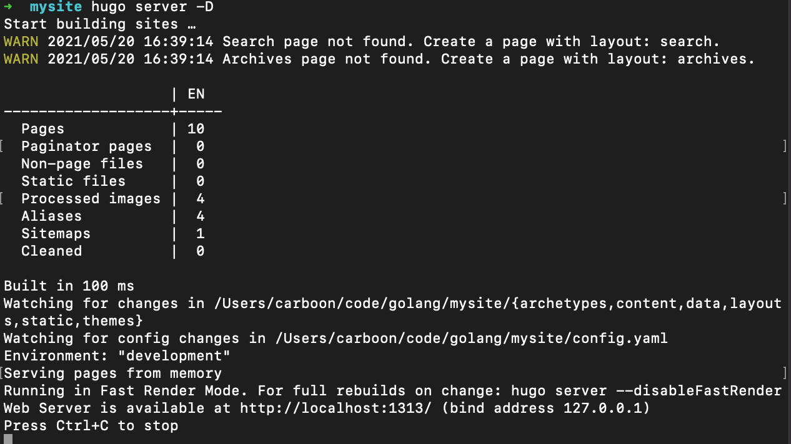
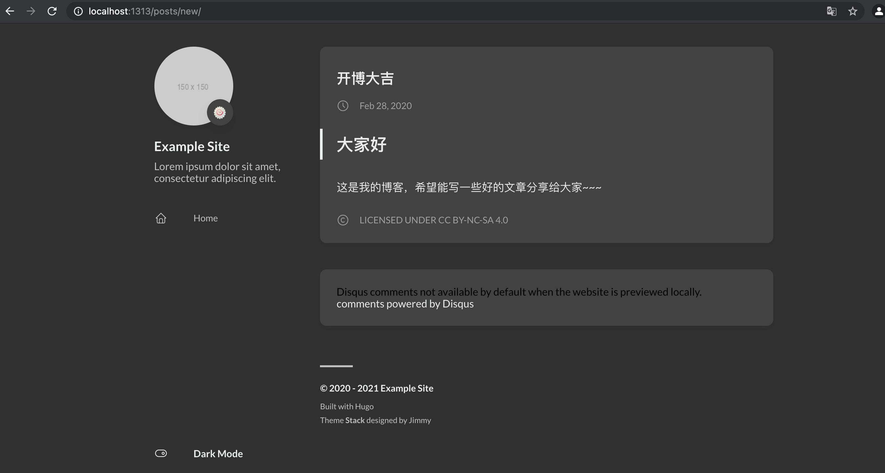

hugo+github
hugo+github
背景
赋闲一阵后，在5.20日这个好日子感觉特别无聊，想着自己本地记录了一些技术文档，打算进行一次梳理，之前了解过 github可以当博客用，这次我就顺其自然，研究下怎么使用。扫了一圈，发现hugo这个工具挺不错的。简单的找了一些文档，照着做了一把。大致入了个门。在这里做一个记录，顺便也是给博客开个张。
准备工作
- github 的账号，本地安装git
- 本地安装 hugo。macos 直接 brew install hugo。（hugo version查看版本确认安装成功）
- hugo的一些theam 可以提前准备。具体表现就是一个目录：themes预览后下载，我用的是 stack
本地博客构建
目的简单，本地先把静态页面生成。
-
在安装hugo后，找一个目录 执行： #hugo new site mysite .会生成一个目录,目录内容如下：
 重点关注 config.toml 与 themes。
config.toml:配置文件
themes:模版
重点关注 config.toml 与 themes。
config.toml:配置文件
themes:模版 -
下载 模版 放进themes中，并进行配置： git clone https://github.com/CaiJimmy/hugo-theme-stack.git themes/stack 其中配置，直接将 stack中的 exampleSite/config.yaml 替换 config.toml即可，（toml文件可以删除掉） 这些方法可以参考模版提供者给的说明文档进行操作
修改配置config.yaml：
 分别是：
分别是：
- 接下来要配置的github上给的地址。(等下再配置）
- 模版的名字，需要和目录一致
- 文章目录名，提交的文章放的地方。这里是posts
3.创建第一个文章,进入 content/posts目录，（如果没有此目录则手动创建一个，编辑 new.md(文件名随意），内容如下（需要符合md的语法。
---
title: "开博大吉"
date: 2020-02-28T11:47:15+08:00
draft: true
---
## 大家好
这是我的博客，希望能写一些好的文章分享给大家~~~
） 4 查看效果： mysite目录下执行 hugo server -D 
浏览器打开： 
5 建立静态页面，
hugo -D
这里会生成一个public目录，这个目录实际上就是一个网站。
到这里本地博客构建成功.下面我们把博客上传到github
github 上传
-
新建一个github仓库。注意命名，从右上角的setting进行配置 theme 可以先随便选择
-
验证一下是否可用：浏览器直接输入 url，比如这里我用的 http://carboon.github.io/ 如果不可用，那么可能就是名字命名问题。
-
接下来将仓库 git clone到本地
git clone git@github.com:carboon/carboon.github.io.git public
注意，命令在mysite目录下执行，且仓库本地需要命名必须为public。
- 生成博客内容并提交
hugo -D
执行后，发现public目录多了很多内容，然后执行 commit/push 提交

到这里就成功了。
改进
-
优化工作流: 本地编辑文档，然后更新public文档，然后再提交到github。虽然已经比较方便，但是涉及到三处操作。现在看能否精简一下。typora自身没有编辑后自动执行脚本的能力。所以只能合并后面两个流程，脚本如下：
#!/bin/bash echo -e "\033[0;32mDeploying updates to GitHub...\033[0m" # Build the project. hugo # if using a theme, replace by `hugo -t <yourtheme>` # Go To Public folder cd public # Add changes to git. git add -A # Commit changes. msg="rebuilding site `date`" if [[ $# -eq 1 ]];then msg="$1" fi git commit -m "$msg" # Push source and build repos. git push origin main # Come Back cd .. -
后面发现照片管理比较费事，调试本地md图片目录的路径和hugo图片路径就搞了很久。最终决定采用 云服务+picgo+typora模式。
具体操作不赘述。主要涉及：买腾讯云服务，包括cos（cloud object storage）+腾讯云api密钥配置。picgo设置，与腾讯云进行关联，typora在偏好设置中图片设置，拷贝照片进来时，自动上传。这样就实现了一键管理，也不需要再维护一个本地相册。
总结
如果把“搭建一个博客”作为一个项目主题，目前基本上完成，也进行了易用性加强的迭代。最终我们实现了一个typora编辑，github pages 托管与呈现，hugo进行静态页面生成，picGo与腾讯云进行图片管理。脚本一键发布，诸如此类特性的一个功能。大部分都在网上有现成的教案。
方案对比：
- 完全自助的博客管理（成本过高）
- 印象笔记，markdown非常不成熟，md编辑非常延迟，无解。
- vscode编辑，经过测试，也非常推荐，唯一美中不足，就是插件市场中的插件，复制用的是command+option+p，不太方便，command+option+o 可以传对象，也比较方便，作为博客来讲，还暂时用不上音视频之类的富媒体）
- 一开始用 github桌面版的，能看到提交对比，但是想了下，这块不是特别重要。于是改成脚本一键发布。
后续计划：
- 继续试用一下，看看哪些可以进一步用来提升博客管理的个人体验
- 研究一下有没有办法将一键发布和编辑器绑定。